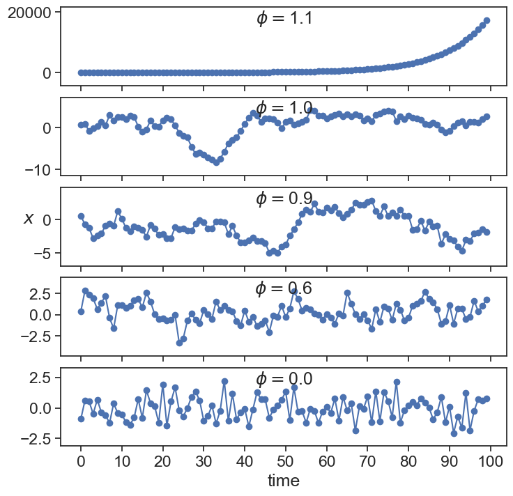
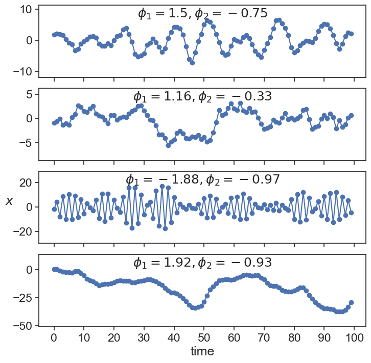
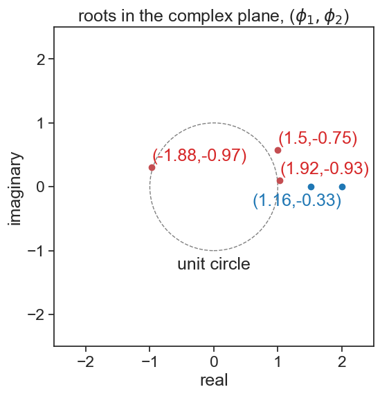

30 stationarity
30.1 weak stationarity
A time series is called weakly stationary if the following conditions are met:
- its mean \mu does not vary in time: \mu_X(t) = \mu_X(t+\tau) for all values of t and \tau.
- its variance is finite for any time t: \sigma^2_X(t) < \infty.
- The autocorrelation function between two lagged versions of the same time series, X(t_1) and X(t_2), depends only on the difference \tau=t_2-t_1.
30.2 strict/strong stationarity
As the name suggests, strict stationarity requires much more than the above. It requires that the joint CDF of two lagged versions of X is the same. It is rare to require such strong terms, we will assume weak stationarity always from now on.
30.3 stationarity of AR(p)
Let’s write once more the definition of AR(p):
x_{t} = \phi_1\,x_{t-1} + \phi_2\,x_{t-2} + \cdots + \phi_p\,x_{t-p} + \varepsilon
We can define the backward shift operator B as
B X_t = X_{t-1}
Of course, if B is applied p times, it shifts X thus:
B^p X_t = X_{t-p}.
With that in hand, we can rewrite the definition of AR(p) as follows:
x_{t} = \phi_1\, B\,x_t + \phi_2\,B^2\,x_t + \cdots + \phi_p\,B^p\,x_t + \varepsilon
We have many terms with x_{t}, so let’s group them on the left-hand side:
x_{t}\, \phi(B) = \varepsilon,
where the characteristic polynomial \phi(B) is
\phi(B) = 1 - \phi_1\, B - \phi_2\,B^2 - \cdots - \phi_p\,B^p
In order to determine the stationarity of AR(p), we need to find the roots of
\phi(B) = 0,
called characteristic roots. These roots are often complex numbers.
AR(p) is stationary if ALL the characteristic roots lie OUTSIDE the unit circle.
The reason for this is not obvious. A nice explanation can be found in this StackExchange response. Another good text is Tsay (2010, chap. 2).
Brockwell and Davis (2016, chap. 2 p. 49 and chapter 3 p. 75) explain that, strictly speaking, an AR(p) process is stationary as long as the roots do not lie on the unit circle. However, in the case that the roots lie inside the unit circle, the process is noncausal, meaning that the present state depends on future states. In reality, everyone just ignores this point, and simply say that we require the roots to lie outside the unit circle to guarantee stationarity.
30.4 stationarity of AR(1)
We need to solve the roots of the characteristic equation
1 - \phi_1\, B = 0.
The only root is
B = \frac{1}{\phi_1}
Because we require that this root is greater than 1 (in absolute value), we have that:
\left|\frac{1}{\phi_1}\right| > 1\quad \longrightarrow \quad |\phi| < 1.
This result corroborates our conclusion from before:

30.5 stationarity of AR(2)
We need to solve the roots of the characteristic equation
1 - \phi_1 B - \phi_2 B^2 = 0.
For the AR(2) time series from before, here are the roots of the characteristic polynomial plotted on the complex plane:


Because complex roots come in pairs, I plotted above only one of the roots, the one with positive imaginary component. The second panel (\phi_1=1.16,\phi_2=-0.33) has two real roots, so both are plotted in blue.
The AR(2) time series will have a periodic component if the roots are complex, and the frequency of oscillation is
f_0 = \frac{1}{2\pi}\cos^{-1}\left( \frac{\phi_1}{2\sqrt{(-\phi_2)}} \right)
See an interesting discussion in David Josephs’ excellent time series webpage
Play with the widget below to get a feel of how the complex roots depend on the values of \phi_1 and \phi_2. In the left panel you can move the point A to choose different \phi values, and on the right you see the complex roots of the polynomial instantly updated. As long as the point A is inside the blue triangle, the roots will be outside the unit circle, and therefore the process will be stationary. For \phi_2 values above (below) the red line, the complex roots will be real (complex conjugates).
Here’s a version you can play with directly on this page, built the same way, except you can drag in either panel: move point A on the left to choose \phi_1,\phi_2 and watch the root(s) update on the right, or drag a root on the right and watch \phi_1,\phi_2 update on the left. Above the red curve the roots are real; below it, they are complex conjugates.
The two roots are easy to find from \phi_1,\phi_2, you just need to solve
1 - \phi_1 B - \phi_2 B^2 = 0
for B. What if you choose two roots z_1,z_2 and want to derive from them the value of \phi_1,\phi_2? Just use this:
\begin{split} \phi_1 &= \frac{z_1+z_2}{z_1\cdot z_2}\\ & \\ \phi_2 &= -\frac{1}{z_1\cdot z_2} \end{split}
30.6 stationarity of AR(4)
Conceptually, this is exactly like AR(2). In case you ever need to choose AR(4) \phi values, play with the widget below and see if you can put all the roots outside the unit circle.
With four roots there’s no simple 2D triangle to draw, but the idea is identical: drag any of the four roots in the complex plane below. Each pair (z_1,\bar z_1 or z_3,\bar z_3) can be a complex-conjugate pair, or — drag one of them along the real axis — two independent real roots, with the other one in that pair held fixed. Either way, the resulting \phi_1,\phi_2,\phi_3,\phi_4 (and whether the process is stationary) update instantly.